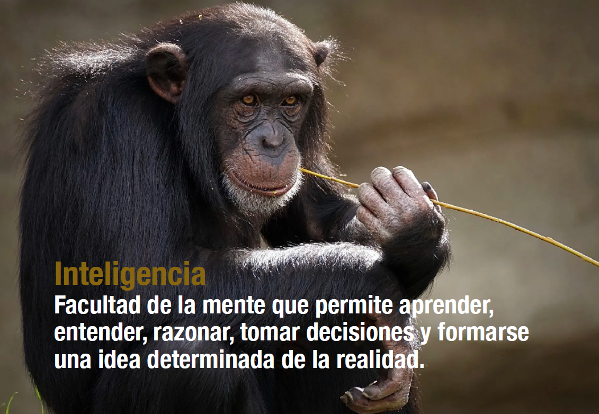
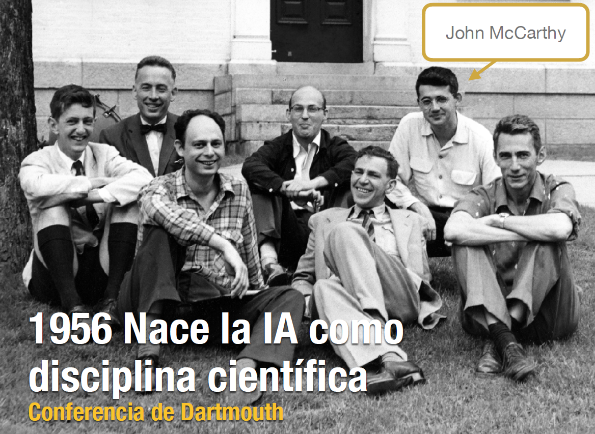

Sesión 2 – Fundamentos de IA aplicada¶
De las herramientas digitales a los sistemas inteligentes¶
En la sesión anterior analizamos qué significa ser digitalmente competente en un entorno tecnológico complejo.
En esta sesión daremos un paso más: comprender qué ocurre cuando las herramientas digitales dejan de limitarse a ejecutar instrucciones y comienzan a generar respuestas, recomendaciones y contenido.
La inteligencia artificial ya forma parte de:
- buscadores,
- redes sociales,
- plataformas de streaming,
- sistemas de recomendación,
- asistentes virtuales,
- herramientas académicas,
- y sistemas de IA generativa como ChatGPT.
Sin embargo, utilizar IA no implica necesariamente comprenderla.
El objetivo de esta sesión es construir una visión crítica y fundamentada sobre:
- qué es realmente la inteligencia artificial,
- cómo ha evolucionado,
- por qué la IA generativa supone un cambio importante,
- y qué implicaciones tiene en el aprendizaje, el trabajo y la toma de decisiones.
1. ¿Qué entendemos realmente por Inteligencia Artificial?¶
Automatización frente a inteligencia¶
No todo sistema automatizado es inteligencia artificial.
Una calculadora:
- ejecuta operaciones definidas;
- sigue instrucciones exactas;
- no aprende;
- no adapta respuestas.
Un sistema de IA:
- identifica patrones,
- realiza predicciones,
- aprende a partir de datos,
- genera respuestas probabilísticas.
La inteligencia artificial no “piensa” como una persona.
Funciona identificando relaciones matemáticas y probabilísticas a partir de enormes cantidades de información.

Tipos generales de IA¶
IA basada en reglas¶
Sistemas construidos mediante instrucciones explícitas.
Ejemplo:
- sistemas expertos,
- árboles de decisión clásicos.
Machine Learning¶
Sistemas que aprenden patrones a partir de datos.
Ejemplo:
- detección de spam,
- recomendaciones de contenido,
- predicción de comportamiento.
Deep Learning¶
Uso de redes neuronales profundas capaces de procesar grandes volúmenes de información compleja.
Ejemplo:
- reconocimiento facial,
- traducción automática,
- reconocimiento de voz.
IA generativa¶
Sistemas capaces de producir contenido nuevo:
- texto,
- imágenes,
- código,
- audio,
- vídeo.
2. Breve historia de la Inteligencia Artificial¶
Los primeros planteamientos¶
La idea de construir máquinas inteligentes aparece mucho antes de los sistemas actuales.
Alan Turing planteó una pregunta histórica:
“¿Pueden pensar las máquinas?”
A partir de esta pregunta surgieron los primeros trabajos relacionados con IA.
IA simbólica y sistemas expertos¶
Durante décadas se pensó que la inteligencia podía construirse mediante:
- reglas lógicas,
- símbolos,
- razonamiento formal.
Los sistemas expertos intentaban imitar decisiones humanas mediante enormes conjuntos de reglas.
El problema era evidente: el mundo real es demasiado complejo para describirse únicamente mediante reglas.
Los inviernos de la IA¶
La IA atravesó varios periodos de crisis conocidos como:
“inviernos de la IA”.
Las expectativas eran demasiado altas respecto a las capacidades reales de la tecnología.
Faltaban:
- datos,
- capacidad computacional,
- algoritmos suficientemente potentes.

Machine Learning y Deep Learning¶
El cambio llegó cuando la IA comenzó a entrenarse utilizando datos masivos.
La idea dejó de ser:
“programar todas las reglas”
para pasar a:
“permitir que el sistema aprenda patrones”.
Esto impulsó:
- reconocimiento de imágenes,
- traducción automática,
- asistentes virtuales,
- sistemas predictivos.
La aparición de la IA generativa¶
La IA generativa representa un nuevo salto.
Modelos actuales como:
- ChatGPT,
- Gemini,
- Claude,
- Copilot,
son capaces de generar contenido aparentemente humano.
Esto transforma:
- la educación,
- el trabajo,
- la creatividad,
- la investigación,
- la comunicación.
Think about it — Debate 1
Si una IA puede escribir un texto coherente y responder preguntas complejas:
3. ¿Qué hace diferente a la IA generativa?¶
Predicción frente a comprensión¶
La IA generativa no “sabe” realmente lo que dice.
Funciona prediciendo cuál es la siguiente palabra, imagen o elemento más probable dentro de un contexto.
Por ello:
- puede generar respuestas muy convincentes;
- puede sonar segura;
- puede parecer experta;
y aun así producir errores o información falsa.
Modelos fundacionales y prompts¶
Los modelos actuales funcionan a partir de:
- entrenamiento masivo,
- enormes cantidades de texto,
- aprendizaje estadístico,
- interacción mediante prompts.
El prompt se convierte en una nueva forma de comunicación entre humanos y sistemas inteligentes.
La calidad del resultado depende enormemente de:
- claridad,
- contexto,
- precisión,
- capacidad crítica del usuario.
Alucinaciones y sesgos¶
Los sistemas generativos pueden:
- inventar referencias,
- producir afirmaciones falsas,
- reflejar sesgos presentes en los datos de entrenamiento,
- transmitir información incorrecta con gran seguridad aparente.
Por ello, la validación humana sigue siendo imprescindible.
4. La ilusión de inteligencia¶
Uno de los mayores riesgos actuales es antropomorfizar la IA.
Cuando una herramienta:
- escribe fluidamente,
- mantiene conversaciones,
- responde rápidamente,
es fácil atribuirle:
- comprensión,
- intención,
- razonamiento humano.
Sin embargo, una respuesta convincente no implica comprensión real.
La IA puede producir lenguaje sofisticado sin tener conciencia ni entendimiento del contenido generado.
Think about it — Debate 2
Dos estudiantes utilizan IA generativa para realizar una tarea académica.
5. IA generativa y competencia digital¶
La inteligencia artificial forma ya parte de la competencia digital.
Ser competente digitalmente implica:
- saber cuándo utilizar IA;
- comprender sus limitaciones;
- detectar errores y sesgos;
- verificar información;
- mantener pensamiento crítico;
- proteger privacidad y datos;
- documentar el uso de herramientas generativas.
El verdadero problema no es utilizar IA.
El problema aparece cuando: - dejamos de cuestionar sus respuestas; - delegamos completamente el pensamiento; - confundimos fluidez con verdad.
Ideas clave¶
La IA no sustituye el pensamiento crítico; hace todavía más necesario desarrollarlo.
Una respuesta convincente no siempre es una respuesta correcta.
Cuanto más humana parece una IA, más fácil resulta dejar de cuestionarla.
La competencia digital no consiste únicamente en utilizar herramientas, sino en comprender cómo afectan a nuestras decisiones, nuestro aprendizaje y nuestra forma de pensar.
Actividad Cómo interactuamos con la IA
Resultados de aprendizaje: RA01
Competencias: CG01, CE01
Resultados de aprendizaje
La RA01 Evaluar su propio nivel de competencia digital de acuerdo con el marco europeo DigComp 3.0.
Adquirir este resultado de aprendizaje es como mirarse en un espejo antes de iniciar un viaje. Antes de decidir a dónde quieres ir, necesitas saber desde dónde partes. El marco DigComp 3.0 funciona como ese espejo: te permite observar con claridad qué haces bien en el entorno digital, en qué áreas te sientes seguro/a y qué aspectos necesitas mejorar para seguir avanzando.
Competencias
CG01 Comprender los fundamentos de la competencia digital y los principios básicos de la inteligencia artificial, así como su papel en el estudio, la investigación y la práctica profesional.
Adquirir esta competencia es como sentarse por primera vez en la cabina de mando de una nave moderna. Para poder viajar con seguridad no basta con saber que la nave se mueve: necesitas comprender qué hace cada instrumento, cómo interpretar las señales y cuándo confiar —o no— en el piloto automático. La competencia digital te enseña a leer el panel de control; la inteligencia artificial añade sistemas avanzados que te ayudan a tomar decisiones, optimizar rutas y anticipar problemas. Pero el criterio final sigue siendo humano: tú decides hacia dónde ir y cómo actuar.
Las CE01 Evaluar el propio nivel de competencia digital mediante instrumentos basados en el marco DigComp 3.0, identificando fortalezas y áreas de mejora en contextos académicos y profesionales.
Adquirir esta competencia es como acudir a una revisión médica completa. No basta con “sentirse bien” o pensar que todo va correctamente: necesitas pruebas, indicadores e instrumentos que te permitan conocer tu estado real. Los cuestionarios y herramientas basados en DigComp 3.0 actúan como ese chequeo: muestran qué áreas de tu competencia digital están fuertes, cuáles necesitan entrenamiento y qué hábitos deberías mejorar para rendir mejor en tu vida académica y profesional.